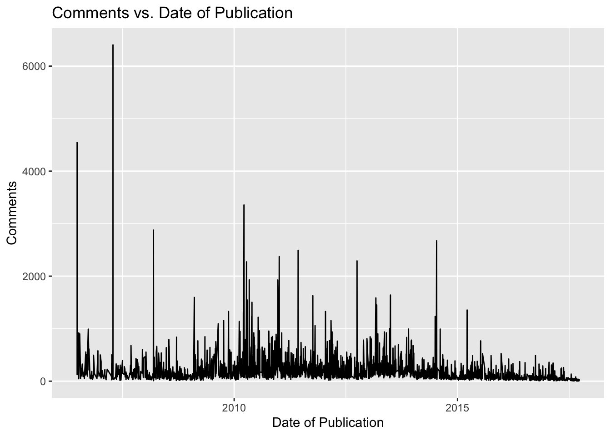

In this workshop, we’ll introduce you to the Lubridate package, a useful tool to work with dates and times in R.
Objectives of the session:
Understand the core components of lubridate.
To learn how to handle date and time data effectively.
To apply this knowledge to real-world data analysis and visualization tasks.
Lubridate simplifies date and time data manipulation in R.
It provides an intuitive and consistent interface for creating, parsing, and performing operations on date-time objects.
This package offers a set of standardized functions for analyze dates, performing arithmetic with date-time data, and extracting specific components of date and time formats (e.g., year, month, day).
The easiest way to get lubridate is to install the whole tidyverse:
Alternatively, install just lubridate:
Or the the development version from GitHub:
There are three types of date/time data that refer to an instant in time:
To get the current date or date-time you can use today() or now():
## [1] "2023-10-27"## [1] "2023-10-27 01:52:26 CEST"The phrase “CEST” in the output represents the time-zone, this stands for Central European Summer Time. By default it should be “UTC”.
*You can use the ‘OlsonNames()’ function to locate the continent or city you wish to use.
You can determine either the ‘UTC’ time or the current time in another country.
## [1] "2023-10-26 23:52:26 UTC"## [1] "2023-10-27 06:52:26 +07"Using lubridate, we have the capability to parse dates by employing a combination of the letters ‘d’ (representing day), ‘m’ (representing month), and ‘y’ (representing year). We simply match the letters to the pattern of the date we are trying to parse.
For example, let’s consider the date May 31, 2023. We can represent it either numerically without spaces or as a string using either ‘-’ or ‘/’.”
#Let's see how it will appear when we begin with the year.
ymd(20230531)
#Let's see how it will appear when we begin with the month.
mdy("05-31-2023")
#Let's see how it will appear when we begin with the day.
dmy("31/05/2023")
#Also, we can write our date like this
mdy("May 31st, 2023")
dmy("31 of May 2023")ymd() and friends create dates. To create a date-time, add an underscore and one or more of “h”, “m”, and “s” to the name of the parsing function:
## [1] "20H 11M 59S"## [1] "2023-05-31 20:11:59 UTC"## [1] "2023-05-31 20:11:00 UTC"## [1] "2023-05-31 20:00:00 UTC"If the date-time variable is successfully parsed as a date-time class then we can begin extracting components.
Can you extract date, year, month, hour, minutes and seconds from the date May 31, 2023?
## [1] "2023-05-31"## [1] 2023## [1] 5## [1] 31## [1] 20## [1] 11## [1] 59## [1] 22## [1] 2## [1] 1These datasets contain information about all audio-video recordings of TED Talks uploaded to the official TED.com website until September 21st, 2017.
Features Available:
More about dataset:https://www.kaggle.com/datasets/rounakbanik/ted-talks/data
## [1] "comments" "description" "duration"
## [4] "event" "film_date" "languages"
## [7] "main_speaker" "name" "num_speaker"
## [10] "published_date" "ratings" "related_talks"
## [13] "speaker_occupation" "tags" "title"
## [16] "url" "views"There are three columns containing dates and times: “film_date”, “published_date”, “duration”. Let’s see how they look like:
The date “1140825600” (or “1151367060”, “1164”) appears to be a timestamp. In many programming languages and systems, timestamps are typically measured in seconds or milliseconds since a reference point in time, often referred to as the “Unix epoch.”
We can convert this Unix timestamp to a date using the “as_datetime”, “as.duration” function:
ted$published_date <- as_datetime(ted$published_date)
ted$film_date <- as_datetime(ted$film_date)
ted$duration <- as.duration(ted$duration)
ted_selected <- ted |>
select(film_date, published_date, duration) |>
head()
ted_selectedDoes the duration of the TED talk video affect the number of views?
#Most views
ted_compare_v <- ted |>
arrange(desc(views)) |>
head(5) |>
select(duration, views)
ted_compare_v#Least views
ted_compare_views <- ted |>
arrange(views) |>
head(5) |>
select(duration, views)
ted_compare_viewsDoes the hour when the video was posted affect the views?
Extract hour from the published_date and compare with views:
#Most views
ted_compare_h <- ted |>
mutate(hour_publ = hour(published_date)) |>
arrange(desc(views)) |>
head(5) |>
select(hour_publ, views)
ted_compare_h#Least views
ted_compare_hour <- ted |>
mutate(hour_publ = hour(published_date)) |>
arrange(views) |>
head(5) |>
select(hour_publ, views)
ted_compare_hourDoes the year affect the number of comments?
Extract year from the published_date and compare with comments:
#Most comments
ted_compare_y <- ted |>
mutate(year_publ = year(published_date)) |>
arrange(desc(comments)) |>
head(5) |>
select(year_publ, comments)
ted_compare_y#Least comments
ted_compare_year <- ted |>
mutate(year_publ = year(published_date)) |>
arrange(comments) |>
head(5) |>
select(year_publ, comments)
ted_compare_yearggplot(data = ted, aes(x = published_date, y = comments)) +
geom_line() +
labs(x = "Date of Publication", y = "Comments") +
ggtitle("Comments vs. Date of Publication")
A work by Monserrat López and . Template of Lisa Oswald & Tom Arend.
I2DS Tools for Data Science Workshop by Simon Munzert